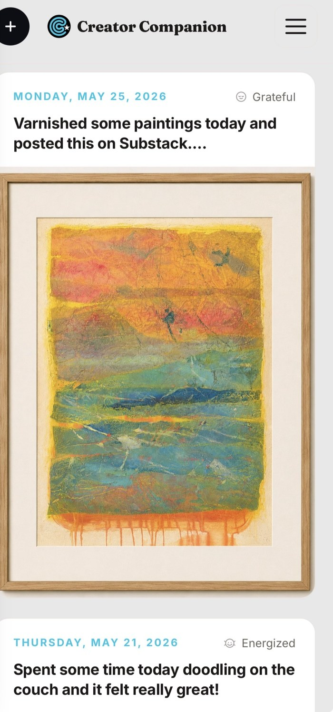
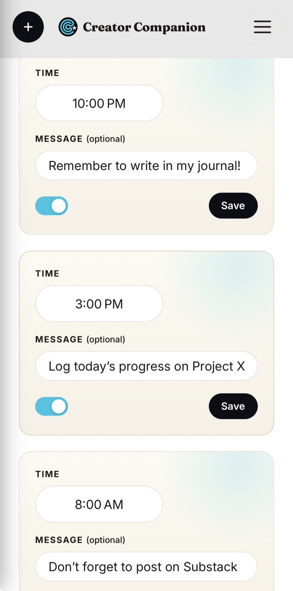

Built for the ritual
How Creator Companion keeps you going
Everything in the app is pointed at one thing: helping you come back tomorrow.
Don't break the chain
A streak you won't want to break
Every morning you write adds a link to the chain. Milestone badges mark the distance you've come, and a 48-hour grace window means one off-day never undoes your momentum.


A spark to begin
A little encouragement, every day
A fresh daily spark and a rotating prompt meet you on the mornings you've got nothing — a small push to lower the bar and just start the first line.
A nudge at your time
A reminder for the moment that fits
Set a gentle daily reminder for your real morning — 6am or 9, with coffee or on the train — so the practice finds you instead of the other way around.

Yours alone
Private by design
A journal is one of the most intimate things you'll ever keep. Creator Companion has no social feed, no public profiles, and no advertising — your pages are encrypted and entirely yours, to export or delete whenever you wish.